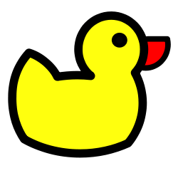
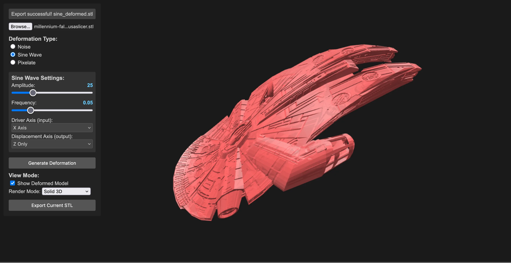
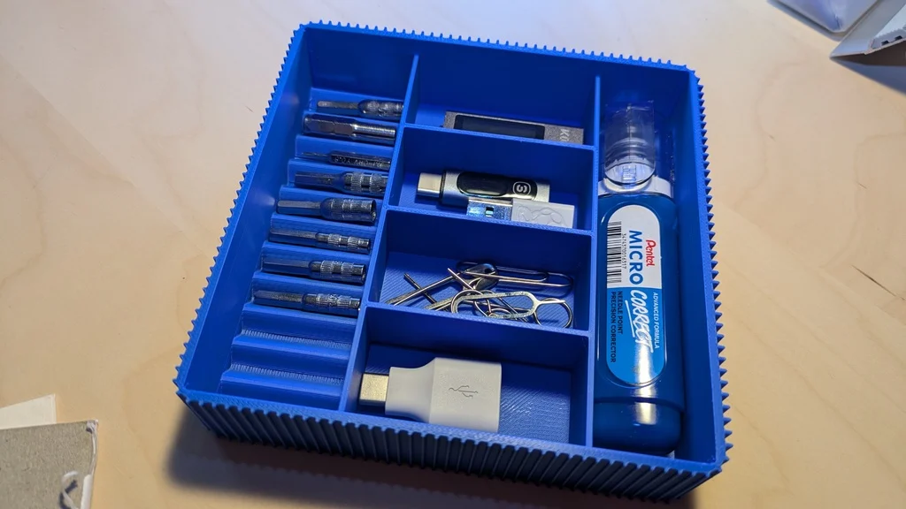
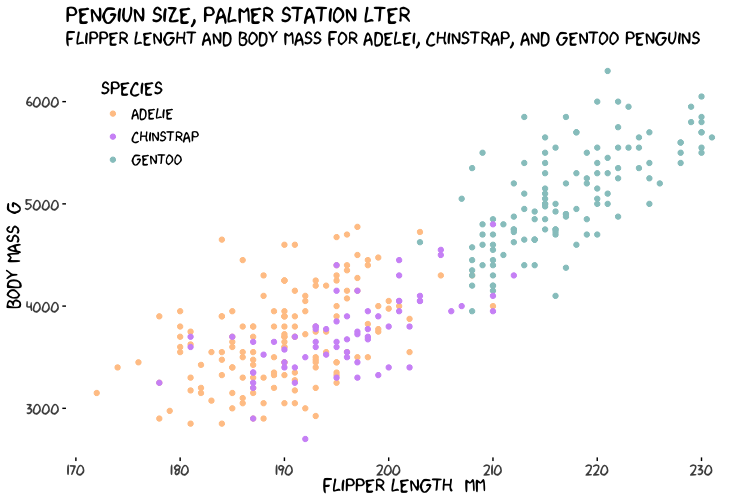
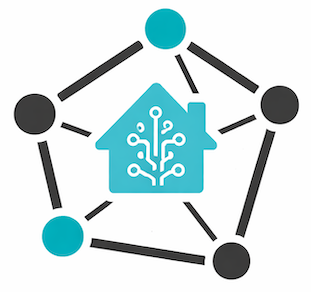

Projects
A working collection: hardware, Home Assistant add-ons, creative and generative tools, and a few scripts that solved a problem once.
Hardware
ESP32 DuckDNS Client
Microcontroller dynDNS client with an ESP32

This project is an open-source, standalone Dynamic DNS (DDNS) client for DuckDNS.org that runs on an ESP32 microcontroller. This enhanced version is a complete overhaul, offering a robust, feature-rich, and secure solution to keep your DuckDNS domain pointed to your home’s dynamic IP address.
Why?… because I can.
NTP & GPS Home Bridge
NTP and GPS monitoring systems for Home Assistant integration on Raspberry Pi.

API for GPS and NTP server. Designed to be feed into Home Assistant
Looking for time and space to make more of these plans a reality.
Home Assistant add-ons
HA Addons Playground
They used to live in a repo each. Now they all sit in one place, which is easier to maintain and easier to add to Home Assistant. Dev versions most of the time.
Add to Home Assistant View on GitHub
 BentoPDF runs BentoPDF inside your browser. Merge, split, compress, convert, OCR, sign and redact, with the files never leaving your machine.
BentoPDF runs BentoPDF inside your browser. Merge, split, compress, convert, OCR, sign and redact, with the files never leaving your machine.
 Manyfold is the Manyfold 3D model manager on port 3214. You point it at your library and thumbnail paths on HA storage and it keeps its data under
Manyfold is the Manyfold 3D model manager on port 3214. You point it at your library and thumbnail paths on HA storage and it keeps its data under /config. It bundles its own PostgreSQL and Redis, so you do not have to run either.
 Nginx Proxy Manager + Static Web Server gives you the NPM interface on port 81 for reverse proxies, plus a static file server on port 80 reading from HA storage.
Nginx Proxy Manager + Static Web Server gives you the NPM interface on port 81 for reverse proxies, plus a static file server on port 80 reading from HA storage.
 Obsidian Sync Server, a self-hosted LiveSync backend on CouchDB, in three flavours: plain HTTP if you already have a proxy in front, SSL if you want to bring your own certificates from
Obsidian Sync Server, a self-hosted LiveSync backend on CouchDB, in three flavours: plain HTTP if you already have a proxy in front, SSL if you want to bring your own certificates from /ssl and sync from mobile, or bundled with NPM if you would rather it handled the certificates for you.
 Stirling-PDF, also in three sizes: ultra-lite for merge, split, rotate and passwords, full for everything including OCR and conversion, and fat if you also want the extra fonts. Fat is about 4 GB, so pick accordingly.
Stirling-PDF, also in three sizes: ultra-lite for merge, split, rotate and passwords, full for everything including OCR and conversion, and fat if you also want the extra fonts. Fat is about 4 GB, so pick accordingly.
All of them build for amd64 and aarch64.
Creative & generative tools
STL Shaper
Real-Time 3D Model Deformation
A playground for 3D experimentation. Apply noise, sine waves, and pixelation effects to STL models in real-time using Three.js.

Capabilities: - Live deformation preview - Multiple effect layers - Noise and wave transformations - Export modified meshes - Interactive 3D manipulation
Parametric Designs openSCAD
- Collection of designs made with Open Scad for parametric 3D printing.

Thingiverse ProfileXKCD - ggplot2 theme
Themes of XKCD for ggplot2

An R package for creating hand-drawn, XKCD-style plots and graphics using ggplot2. Features custom geoms for jittered lines, segments, circles, and figures with the distinctive XKCD aesthetic.
Utilities & scripts
Zigbee ZHA Mesh Graph Export
Making a graph from a Zigbee mesh network

Exports your ZHA devices and their neighbour edges from Home Assistant into CSV files.
Applications: none. But you do get to nerd out over the mesh your zigbee devices built, in igraph, cytoscape, gephi or whatever else you use for graphs.
Ollama Chat History Cleaner
Clean Ollama Chat History and Logs
Scripts to clean only the chat history and logs from Ollama GUI and server. Does not remove models, users, or app settings. Solves the gap in Ollama’s native chat history deletion.
Features: - Delete chat history from Ollama database - Delete Ollama logs - Automatic database path detection (macOS/Windows) - Optional backup before deletion - Cross-platform support: macOS, Linux, Windows